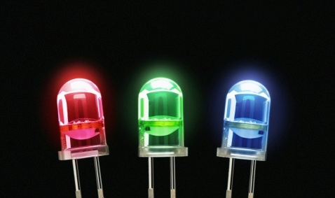
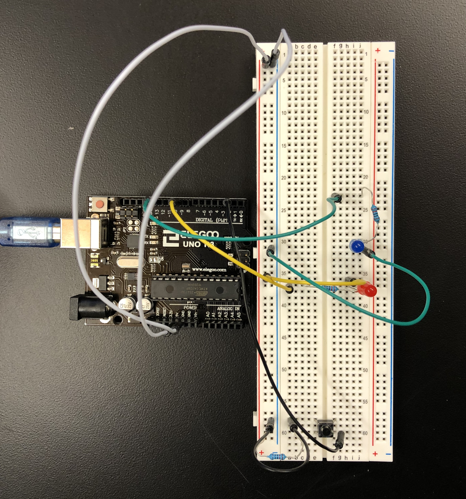
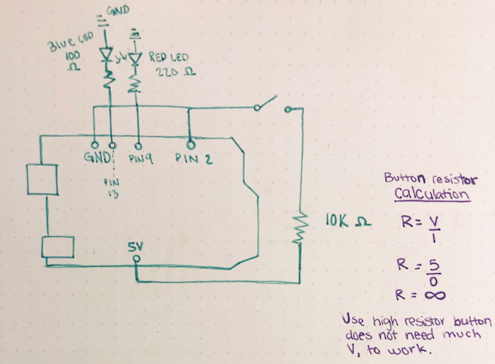

Picture of my breadboard
const int buttonPin = 2; // the number of the pushbutton pin
const int ledPin = 9; // the number of the LED pin
const int fadingDelay = 50; // the speed of LED fading (higher value = slower)
const int blueled = 13;
// variables will change:
int buttonState = 0; // variable for reading the pushbutton status
boolean fadingState = false; // determines whether the LED needs to be turned on or off
void setup() {
// initialize the LED pin as an output:
pinMode(ledPin, OUTPUT);
// initialize the pushbutton pin as an input:
pinMode(buttonPin, INPUT);
pinMode(blueled, OUTPUT);
}
void loop() {
// read the state of the pushbutton value:
buttonState = digitalRead(buttonPin);
// check whether the button was pressed
if (buttonState == HIGH) {
// check the current LED status (on/off)
if (fadingState == false) {
// turn on the LED
for (int i = 0; i <= 255; i += 5) {
analogWrite(ledPin, i);
delay(fadingDelay);
digitalWrite(blueled, HIGH);
}
} else {
// turn off the LED
for (int i = 255; i >= 0; i -= 5) {
analogWrite(ledPin, i);
delay(fadingDelay);
digitalWrite(blueled, LOW);
}
}
fadingState = !fadingState; // save the current LED state (on/off)
}
}

Picture of my schematic & calculations.
I used a high resistor for the button because the button does not need a specific/high voltage
to work.
As for the red LED, putting it in Ohm's Law would give me 160 Ω and I used 220 Ω
because it is the closest resistor. R = (5 - 1.8) / .02
This also goes for the blue LED but I used the 100 Ω resistor because it is closest to 85 Ω
which is what the blue LED need. R = (5 - 3.3) / .02
This project was done with the help/collaboration of Isabell and also with the help of some online resources:
https://darkbluebit.com/arduino/pushbutton-and-fading-led/
https://forum.arduino.cc/index.php?topic=435590.0